Reel 1080x1920, 43,9 s, sem narração. Roteiro A, estética mista.
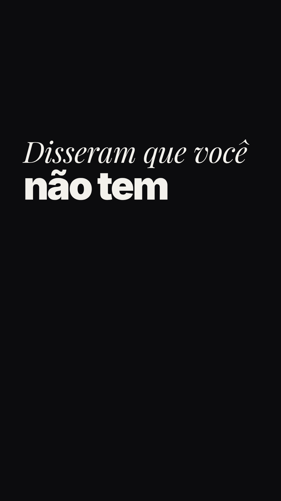
Abre com a frase já na tela. É a capa do Reel.
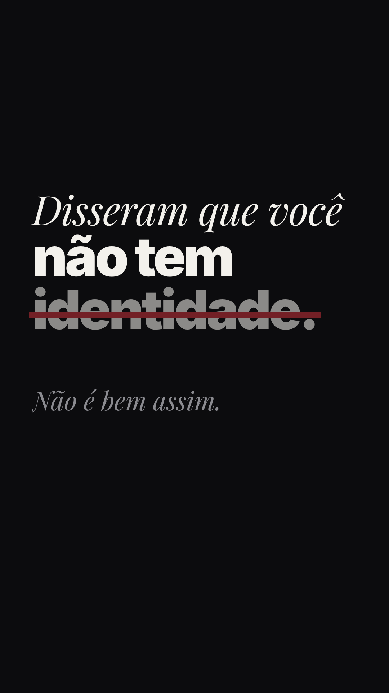
Risco vermelho em identidade. Não é bem assim.
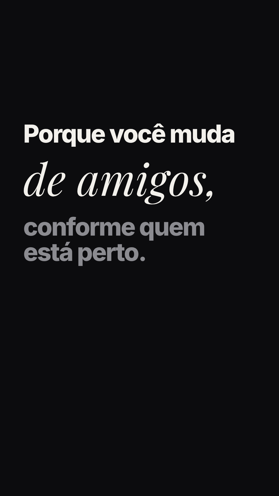
Roupa, gosto, opinião, amigos trocam por máscara. Um card claro cresce e vira o chão da próxima cena.
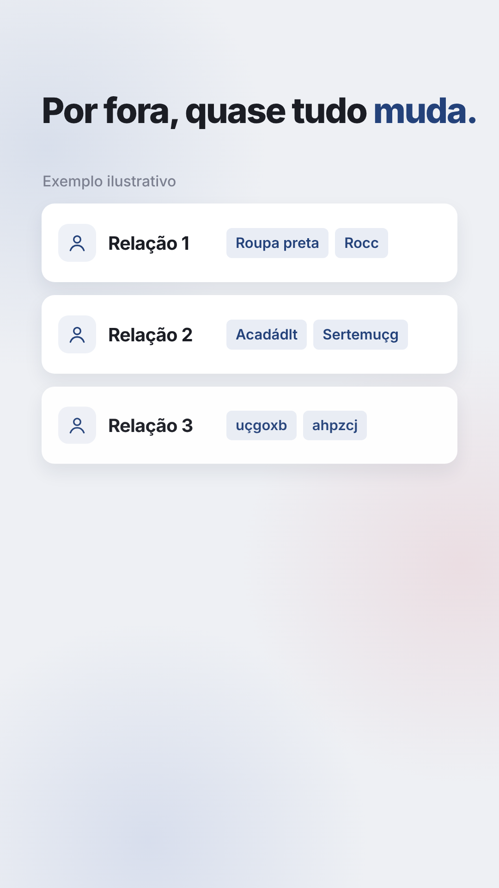
Cards desdobram um a um, tags embaralham e assentam. Exemplo ilustrativo.
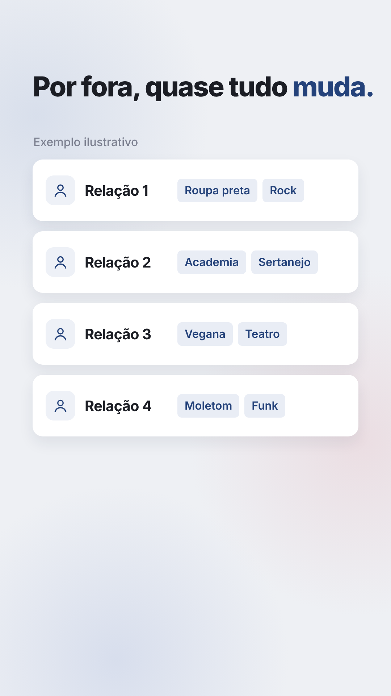
Quatro superfícies diferentes.
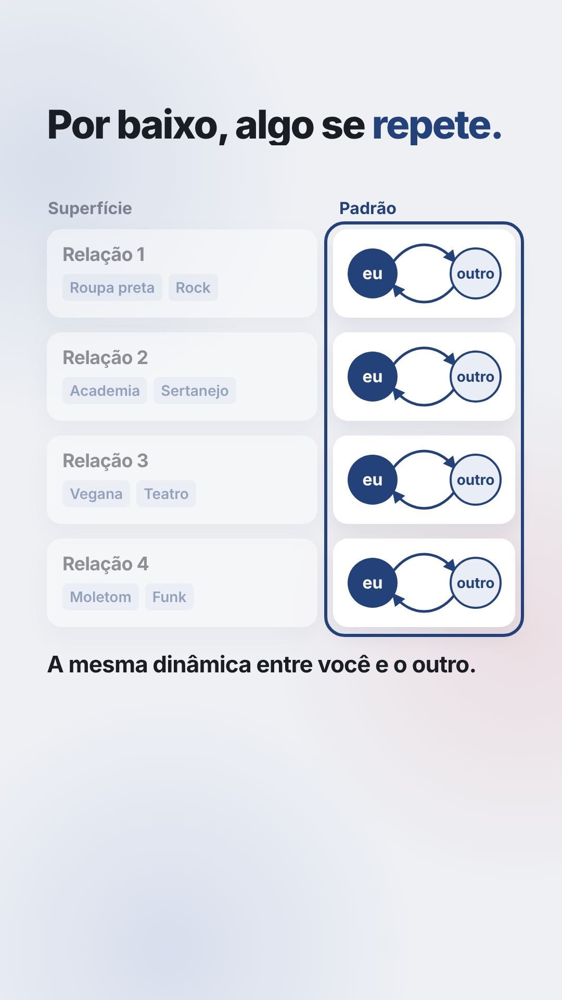
Coluna Padrão: o mesmo laço eu e outro nas quatro linhas. Contorno azul acende.
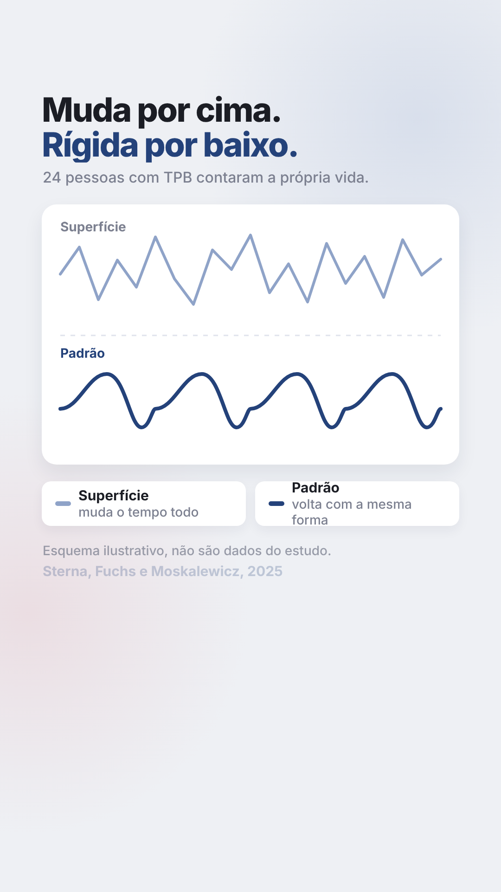
Linha irregular em cima, onda que se repete embaixo. Aviso de esquema e fonte.
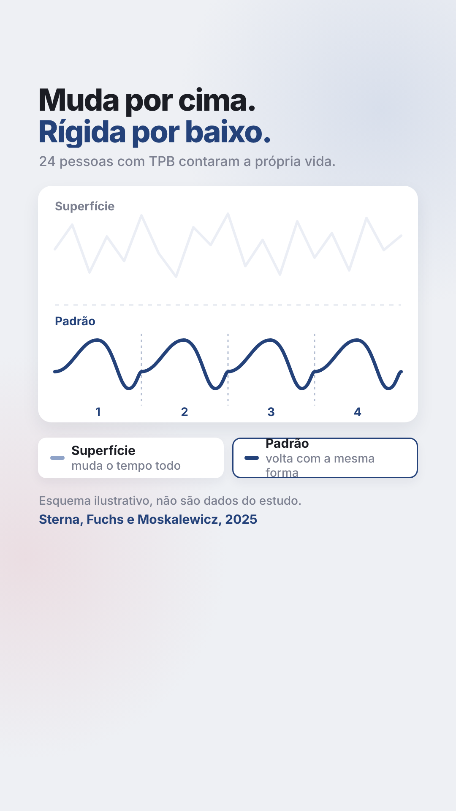
Cursor toca Superfície, depois Padrão. A camada tocada acende, os ciclos ganham número.
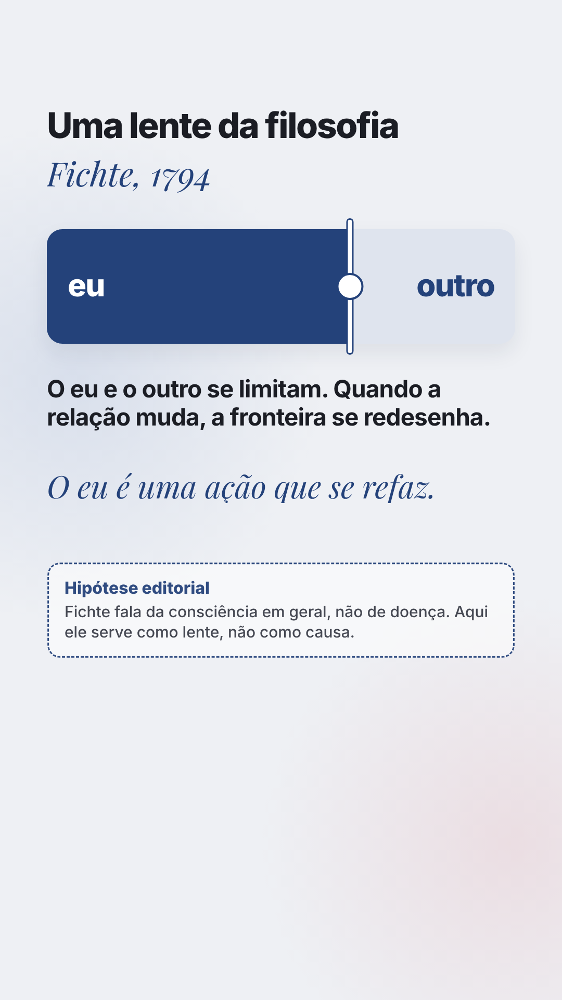
Fronteira eu e outro se move três vezes.
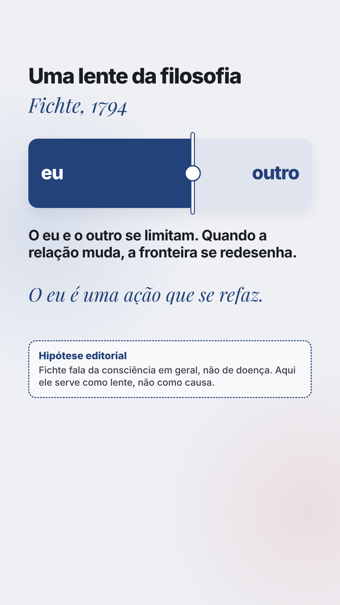
Fichte como lente, não como causa.
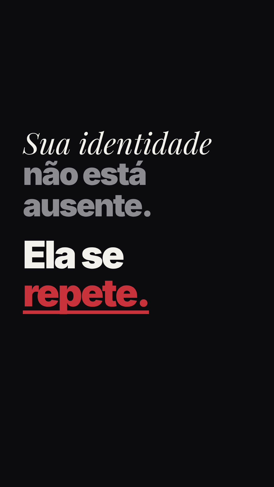
Sua identidade não está ausente. Ela se repete. Sublinhado vermelho.
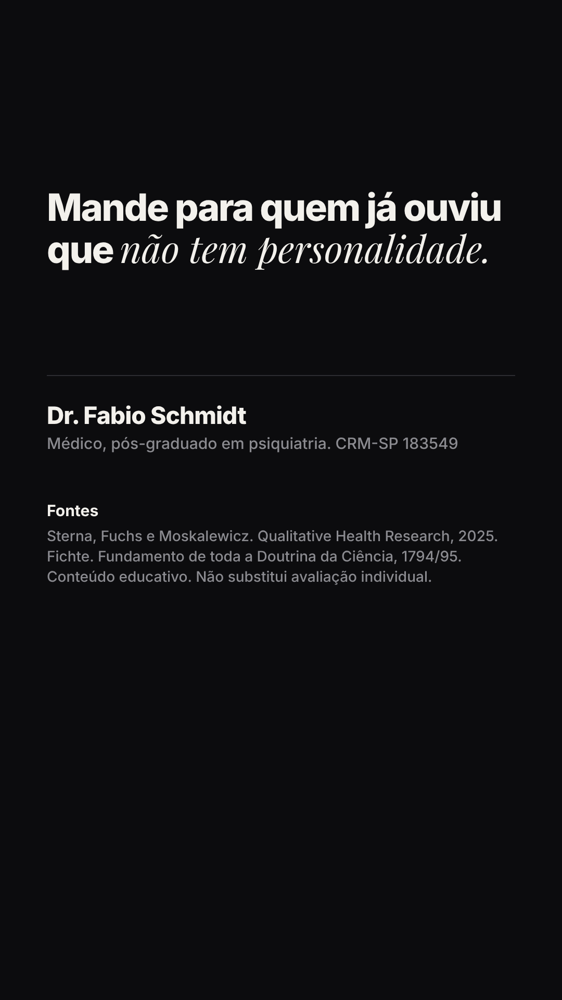
Chamada para envio, assinatura, fontes.